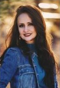

Ruby Andrade
Ruby Andrade is co-founder of Imagine 3D Mini Golf. After 20 years as an aerospace engineer, a Holy Spirit encounter changed her path, leading her to partner in business with her husband Che and brother Armando. Inspired by their son Dane's imagination, they created a unique indoor blacklight mini golf experience featuring hand-painted fantasy themed murals that come to life with 3D glasses.What began in Gilbert, AZ expanded to Scottsdale which led to their third most heartfelt Sedona location: also inspired by Dane, born from his love and passion for Sedona's beauty, legendary energy, and Native American culture.